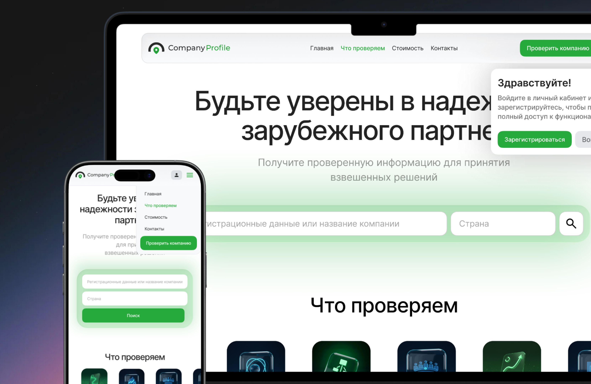
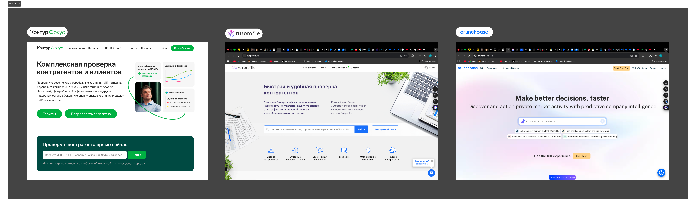
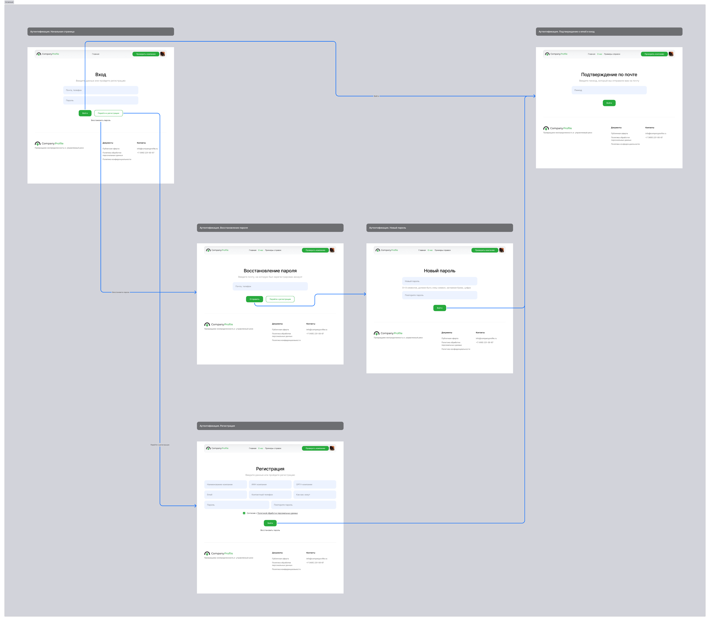
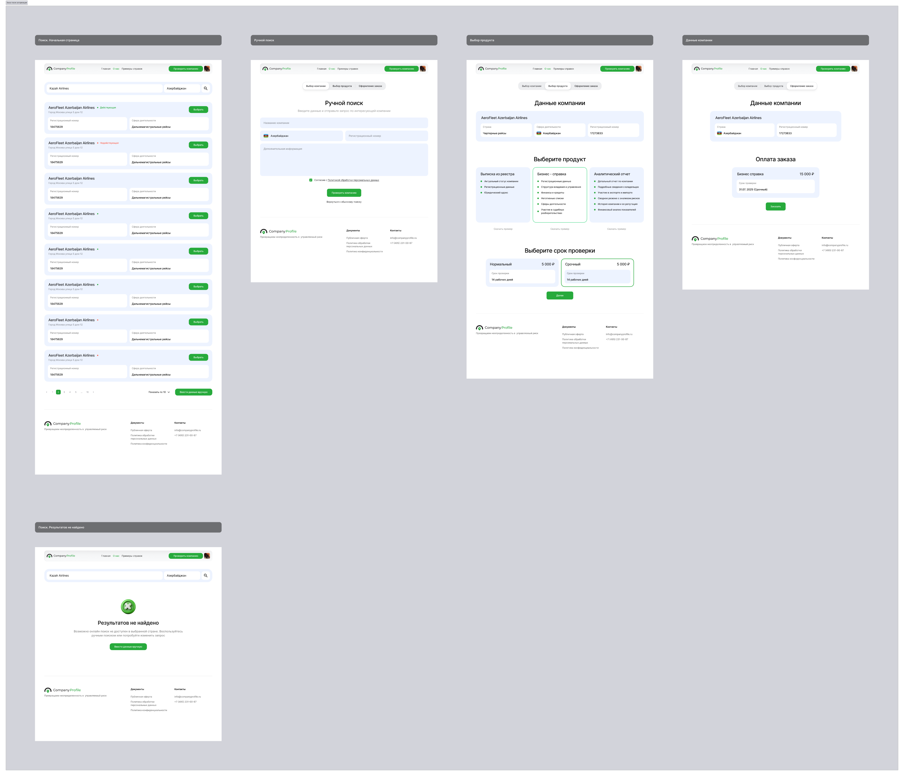
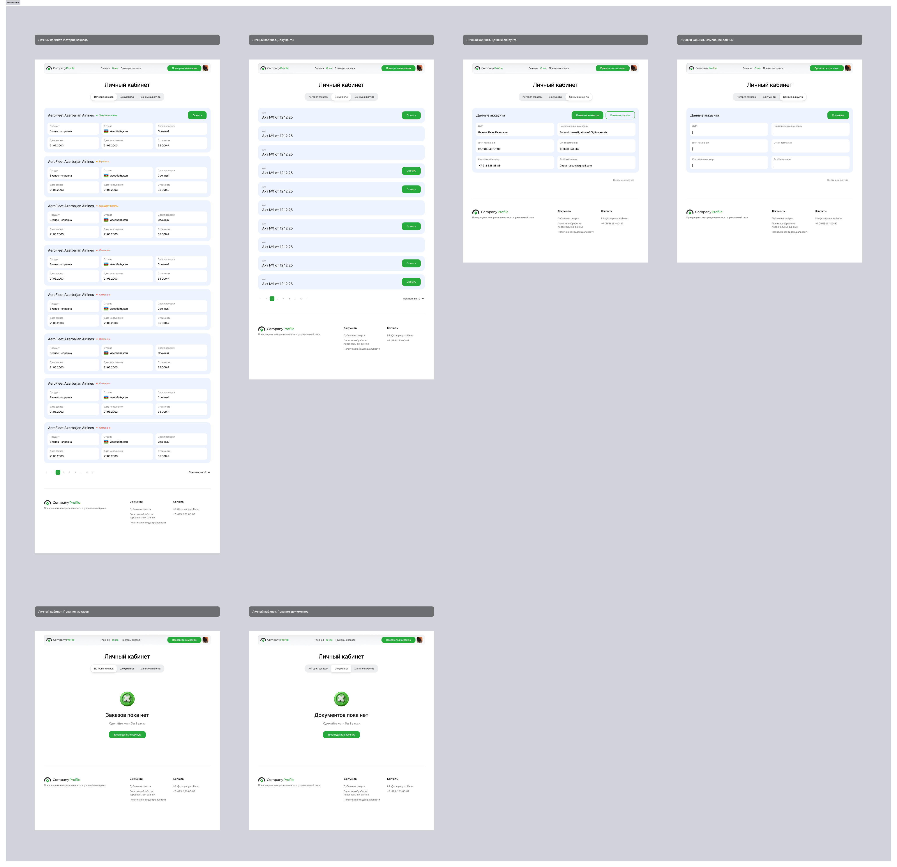

Редизайн сервиса проверки компаний Company Profile
Переосмыслила продуктовую логику сервиса и выстроила сценарий вокруг ключевого действия — от исследования и гипотез до финальных экранов и обновления дизайн-системы.

Задача
Company Profile — B2B-сервис проверки контрагентов: агрегирует данные из разных источников и помогает бизнесу оценить риски перед сотрудничеством.
Сократить путь пользователя до проверки компании и повысить конверсию в ключевое действие, не наращивая объём интерфейса.
Интерфейс перегружен и не расставляет приоритеты: точка входа размыта, CTA не выделен — пользователь теряется и не доходит до результата.
Как продуктовый дизайнер вела проект на всех этапах: от анализа текущего интерфейса и формулировки гипотез до проектирования сценариев, прототипирования и передачи в разработку. Синхронизировалась с аналитиком и PM по требованиям и с фронтендом — по реализации.
Анализ и проблемные участки
Интерфейс не поддерживает основной пользовательский сценарий. Чтобы определить направление редизайна, я разобрала бизнес-цели, потребности ЦА и критерии успеха — и сопоставила их с текущим опытом.
Быстро проверить компанию и получить понятный результат, чтобы принять решение без лишних усилий.
Рост числа проверок, снижение оттока, меньше нагрузки на поддержку, рост CSAT.
Малый и средний бизнес: проверяют контрагентов и оценивают риски, работают с большим объёмом компаний.
Рост конверсии в проверку, меньше времени до первого действия, меньше ошибок и возвратов.

Бенчмаркинг
Проанализировала Контур.Фокус, Rusprofile и Crunchbase, чтобы понять, как в схожих сервисах выстроен путь к результату и какие паттерны можно перенести в наш контекст.

Эффективные сервисы проверки фокусируются на быстром входе через поиск и строят интерфейс вокруг сценария получения результата. Эти принципы легли в основу редизайна.
Гипотезы
Чёткая иерархия заголовок → поиск → контент → CTA помогает быстрее понять структуру и найти действие.
Простая структура тарифов с очевидными отличиями облегчает сравнение и решение.
Меньше блоков и второстепенного контента на первом экране — проще ориентироваться.
Поиск в центре интерфейса как главный элемент — пользователи быстрее начинают сценарий.
Блок «как это работает» помогает понять процесс и чувствовать уверенность перед началом.
Гипотезы проверены на интерактивном прототипе через юзабилити-тестирование.
Проверка гипотез
Пользователи выполняли сценарий проверки компании: от ввода данных до выбора тарифа и получения результата.
Реализация



Результат и выводы
Редизайн выстроил единый сценарий: поиск стал центральной точкой входа, иерархия и тарифы упростились, а ключевое действие получило чёткий акцент. На юзабилити-тестировании пользователи быстрее начинали проверку и увереннее доходили до результата.
Параллельно обновила и систематизировала компоненты дизайн-системы — это ускорило сборку экранов и упростило передачу в разработку. Часть метрик ещё собирается, конкретные значения под NDA.
Поиск в фокусе сократил время до первого действия.
Чёткий CTA и предсказуемый сценарий повысили доходимость до результата.
Обновлённая дизайн-система ускорила сборку экранов и хендофф.